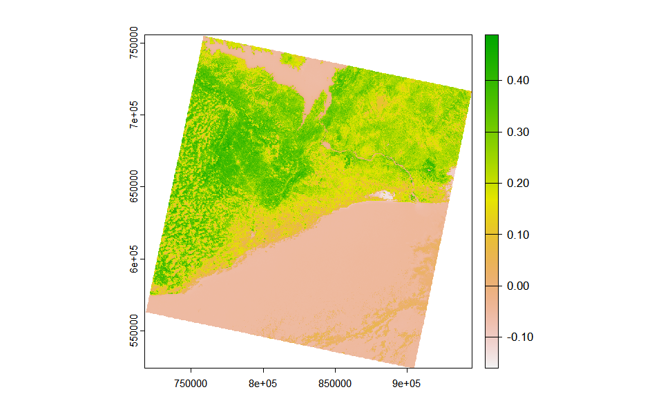
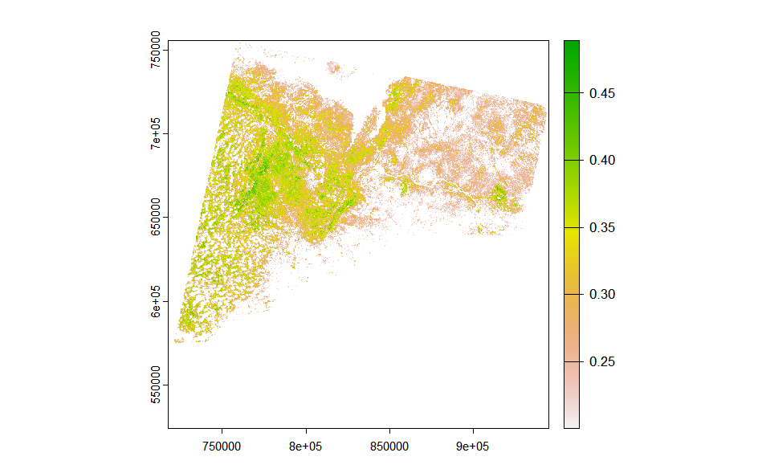
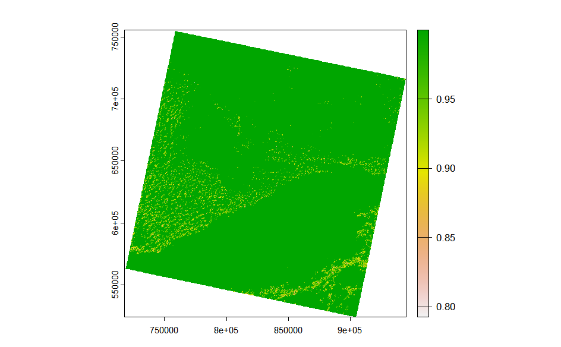
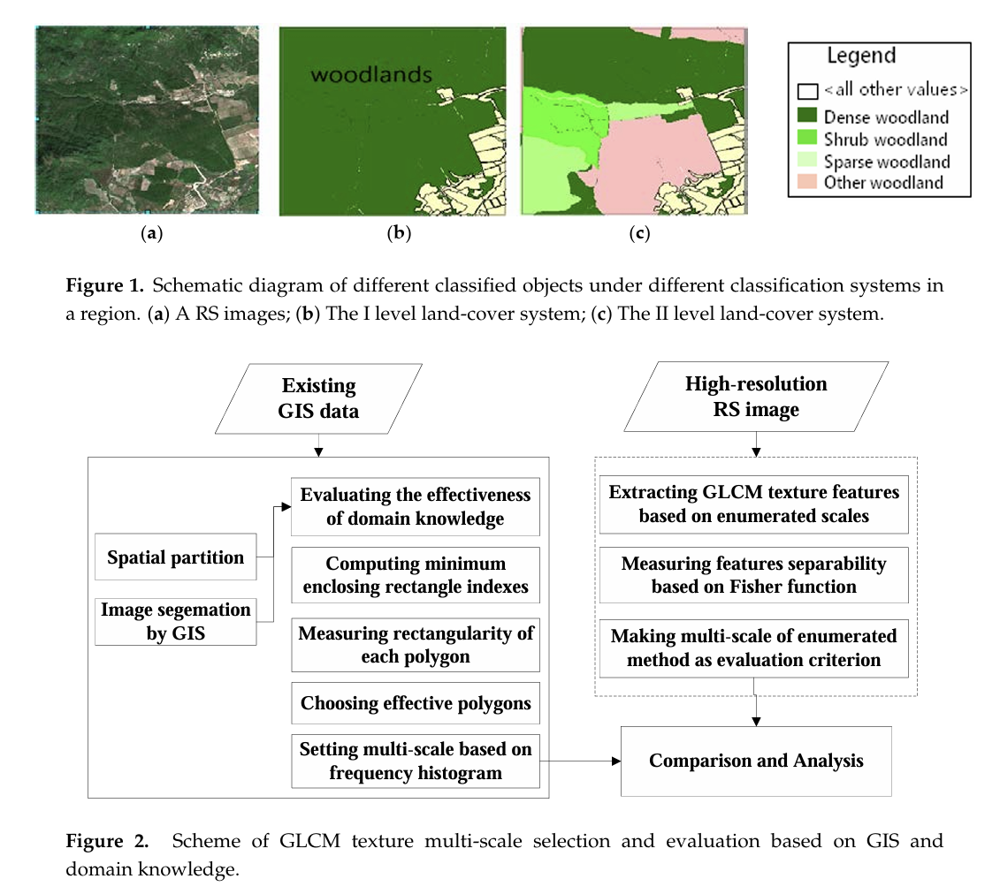

3 Remote Sensing Technologies: Corrections
3.1 Summary
| Key Aspect | Description |
|---|---|
| Remote Sensing Evolution with Landsat 9 | Initially, NASA preferred analog RBV cameras for remote sensing, capturing green, red, and NIR spectra. Norwood advocated for a digital Multispectral Scanner (MSS), foreseeing its potential to capture both visible and invisible wavelengths, leading to the adoption of MSS as a standard for future remote sensing endeavors. |
| Data Corrections and Pre-processing | Essential pre-processing steps necessary for remote sensing data usability. These corrections ensure the accuracy and reliability of the remote sensing data. |
| Radiometric Calibration and Remote Sensing Jargon | Clarification of terms like Digital Number (DN), radiance, and reflectance, explaining the calibration process that converts DNs into meaningful spectral radiance values. |
| Atmospheric Correction Types | Explores atmospheric correction methods, distinguishing between relative and absolute approaches to adjust imagery for atmospheric influences. Techniques include Dark Object Subtraction (DOS), Psuedo-invariant Features (PIFs), and use of atmospheric radiative transfer models like MODTRAN and 6S. These corrections are pivotal for accurate earth surface representation, especially when deriving biophysical parameters or comparing data across time and space. |
| Orthorectification and Topographic Correction | Focuses on adjusting images for relief displacement caused by terrain, ensuring that imagery accurately represents the Earth’s surface as if viewed directly from above. Utilizes sensor geometry and elevation models, alongside cosine correction and other mathematical models, to correct for distortions. |
| Data Joining and Enhancement | The process involves mosaicking to create seamless imagery, with techniques like feathering and histogram matching to ensure consistency across images. Enhancements such as contrast adjustment, filtering, PCA, texture analysis, and fusion (e.g., pan-sharpening) are employed to improve image quality, interpretability, and application relevance. These techniques help in highlighting specific features, reducing data dimensionality, and integrating data from multiple sensors, thereby enhancing the utility of remote sensing imagery for various applications. |
3.1.1 Remote Sensing Data Processing and Correction Formulas
- Geometric Correction Solution Model:
- New x coordinate: \(x = a_0 + a_1x_i + a_2y_i + \epsilon_i\)
- New y coordinate: \(y = b_0 + b_1x_i + b_2y_i + \epsilon\_i\)
- These formulas are used for transforming distorted image coordinates to more accurate positions, where (x_i, y_i) are the locations in the original image, and (a_0, a_1, a_2, b_0, b_1, b_2) are geometric transformation coefficients derived from Ground Control Points (GCPs).
- Inverse Mapping Method (for Geometric Correction):
- Original x coordinate: \(x_i = a_0 + a_1x + a_2y + \epsilon\_i\)
- Original y coordinate: \(y_i = b_0 + b_1x + b_2y + \epsilon\_i\)
- The inverse mapping method is used to deduce the original image’s location from the corrected image positions to ensure accurate pixel value mapping.
- Root Mean Square Error (RMSE):
- \(RMSE = \sqrt{\frac{\sum(observed - predicted)^2}{n}}\)
- RMSE is used to evaluate the difference between model predictions and actual observations. The goal in ground control point correction is to minimize RMSE for improved accuracy.
3.1.2 Remote Sensing Data Enhancement Formulas
- Empirical Line Correction:
- Reflectance (field spectrum) = Gain \(\times\) Radiance (input data) + Offset
- This method corrects the data by performing linear regression against the satellite’s raw digital numbers combined with spectral data measured on the ground.
- Solar Zenith Angle and Viewing Zenith Angle:
- \(cos(i) = cos(\theta\_p)cos(\theta\_z) + sin(\theta\_p)sin(\theta\_z)cos(\phi\_a - \phi\_o)\)
- Where \(\theta\_p\) is the slope angle, \(\theta\_z\) is the solar zenith angle, \(\phi\_a\) is the slope aspect, and \(\phi\_o\) is the solar azimuth. This formula is used for correcting the received radiance, especially when performing topographic correction.
3.1.3 Remote Sensing Data Analysis Formulas
- Normalized Burn Ratio (NBR):
- \(NBR = \frac{(NIR - SWIR)}{(NIR + SWIR)}\)
- This formula is used to detect burned areas or vegetation changes by comparing the reflectance between Near-Infrared (NIR) and Short-Wave Infrared (SWIR) bands.
- Principal Component Analysis (PCA):
- PCA is utilized to transform multispectral data into a set of linearly uncorrelated variables (principal components), often for dimensionality reduction and highlighting significant variables.
3.2 Applications
This week’s practical content is very rich. This note will specifically document the Enhancements section of the practical, focusing on the Ratio and Texture aspects.
3.2.1 Ratio: Normalised Difference Vegetation Index (NDVI):
The Normalized Difference Vegetation Index (NDVI) is a widely used remote sensing index that serves as a key indicator for assessing the health, coverage, and condition of vegetation on the Earth’s surface. NDVI capitalizes on the distinct absorption and reflection properties of vegetation, particularly the contrast between the red (visible) and near-infrared (NIR) bands of sunlight. Active vegetation reflects more sunlight in the near-infrared band and absorbs more in the red band, making NDVI an ideal measure for gauging vegetation health (Zeng et al. 2022).
The values of NDVI range from -1 to 1, with higher values (closer to 1) indicating healthy, thriving vegetation, and lower values (closer to -1) suggesting bare soil or no vegetation cover, while values around 0 typically represent low vegetation cover or urbanized areas.
It’s calculated as follows: \(NDVI = \frac{(NIR - Red)}{(NIR + Red)}\)
The image below shows the NDVI for Accra in Ghana using Landsat imagery from 2024.
It can be noticed from the figure that the boundary between the city and the sea (water system) is not very clear… Additionally, the areas depicted in white, where the NDVI values are the lowest, have been identified through research as salt lake regions. This outcome is likely due to the high reflectance rates associated with these areas.

By extracting specific areas where the NDVI is equal to or greater than 0.2, the imagery reveals cities and water bodies in white, enhancing our ability to discern the distribution of vegetation. Additionally, it allows for the observation of a distinct difference in the NDVI values between the west (forested areas) and the east (farmlands), likely reflecting variations in vegetation density and health.
3.2.2 Texture: Gray-Level Co-occurrence Matrix (GLCM):
Texture GLCM (Gray-Level Co-occurrence Matrix) is a method used to analyze the texture of images. It characterizes the texture properties of an image by examining the spatial relationships of gray levels within it. GLCM is a statistical method that constructs a matrix by calculating the co-occurrence frequency of pixel pairs with specific gray levels at a certain distance and direction. This matrix reflects the distribution of different combinations of gray levels in the image, thereby describing its texture characteristics (Lan & Liu 2018).
Continuing the analysis of textures in the Accra region, this step indeed consumed a significant amount of time… I’ve realized the significance of creating a study area polygon in QGIS~

According to the color scale, dark green corresponds to higher values, indicating that regions of dark green in the image represent areas with a higher degree of texture homogeneity. These dark green areas suggest a consistent and uniform surface characteristic, which upon verification, are largely vegetation and water bodies. In contrast, areas in yellow signify lower homogeneity, pointing to more complex or varied surface features, often associated with urban built-up areas.
Of particular interest is the ocean region in the lower right corner of the image, which also exhibits a heterogeneous texture, possibly influenced by the state of the sea surface. This suggests that for practical research, integrating GIS-related classification data for further analysis might be necessary to avoid potential misinterpretations.
3.3 Reflection
Integrating remote sensing and Geographic Information Systems (GIS) represents a new frontier in the field of image classification (Lu & Weng 2007). This integrated approach leverages the unique advantages of each system to enhance the accuracy and efficiency of classification, overcoming the limitations of using a single technology in addressing complex land cover classification challenges.

I have come across a paper by Lan & Liu (2018) which introduces a method that utilizes GIS and domain knowledge to determine multi-scale windows for GLCM texture descriptors, significantly improving the accuracy of high-resolution remote sensing image classification. The success of this method lies in its ability to extract geographic domain knowledge from different GIS information layers (such as topographic maps, Digital Elevation Models (DEM), land use maps, etc.) and the spatial data mining of this information, which in turn influences the selection of scale parameters for GLCM texture features. This insight profoundly impacted me: GIS and remote sensing technologies are not just tools for data collection and processing, but also serve as a bridge connecting data to the deeper relationships of geographic phenomena.
This realization led me to understand that to fully exploit the potential of remote sensing and GIS data, we must step beyond traditional thinking frameworks and adopt interdisciplinary approaches to problem-solving. For instance, combining remote sensing techniques with machine learning algorithms can significantly enhance the accuracy of classification and prediction; meanwhile, the spatial analysis capabilities of GIS can provide the necessary geographic context for these algorithms, helping us better understand and interpret model results. Furthermore, integrating domain knowledge not only enhances the accuracy of data analysis but also offers new perspectives for understanding complex geographic phenomena.
3.4 References
Lan, Z. & Liu, Y. (2018). Study on multi-scale window determination for GLCM texture description in high-resolution remote sensing image geo-analysis supported by GIS and domain knowledge. ISPRS International Journal of Geo-Information, 7(5), pp.175.
Lu, D. & Weng, Q. (2007). A survey of image classification methods and techniques for improving classification performance. International Journal of Remote Sensing, 28(5), pp.823-870.
Zeng, Y. et al. (2022). Optical vegetation indices for monitoring terrestrial ecosystems globally. Remote Sensing Applications: Society and Environment, 3(7), pp.477–493.